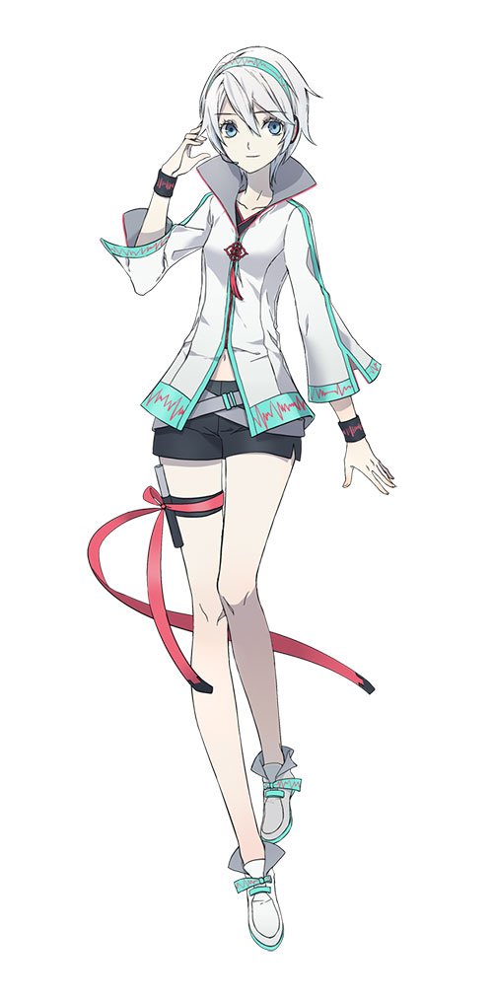
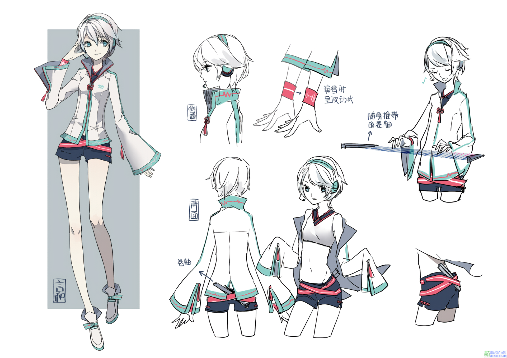
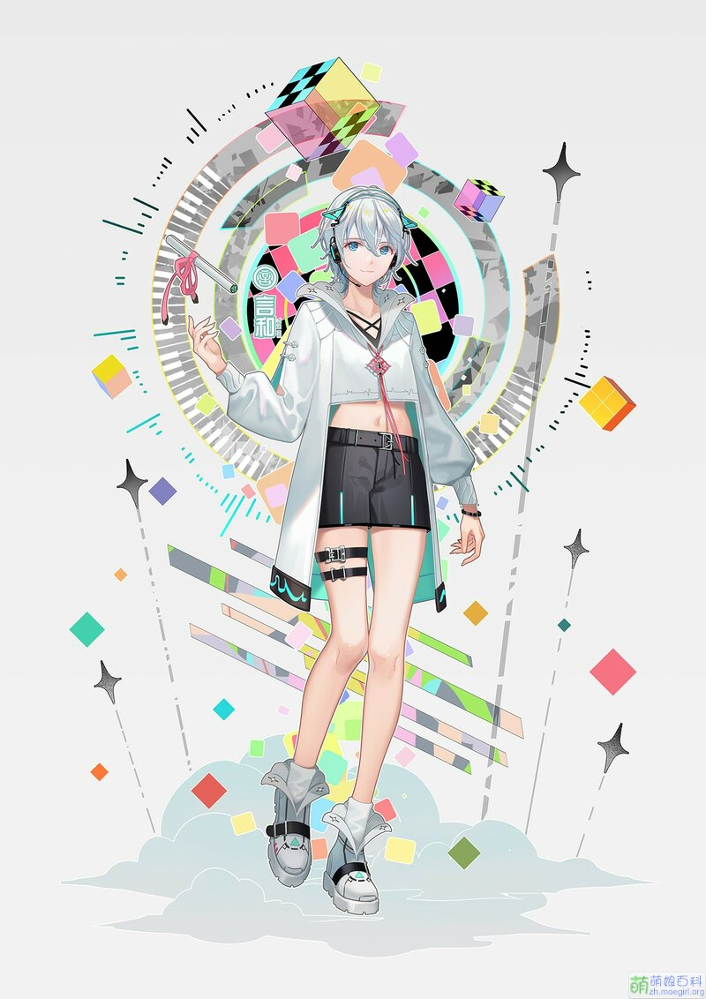

言和是Vsinger（上海禾念信息科技有限公司）旗下
以Yamaha的VOCALOID 3语音合成引擎为基础开发贩售的虚拟女性歌手软件角色制品之一
软件演唱语言为中文。2013年7月11日，该声库在第九届中国国际动漫游戏展览会（CCG）上正式公开
基本资料
- 姓名：言和
- 人设：MQ（阿全）
- 年龄：未设定
- 身高：170cm
- 外貌：白发、蓝瞳。详见下方作者原设。
- 代表色：薄荷绿（00FFCC）
- 声源：刘婧荦
- 声库制作人：GhostFinal
- 发布日期：2013.07.11
- 声库音色：Original（V3）／Normal（V5）、Sweet（V5）
- 乐器：卷轴型键盘（右大腿上）
- 擅长音域：G2-C#4
- 擅长节奏：80-170BPM
- 别称：言和小天使、言和和
形象设计
2013年3月25日，Mercury企划、VOCALOID™ China与178.com动漫频道协办第二届「VOCALOID™ China」形象募集活动
后于6月6日公布了5件入围作品（包括1件最终评选作品），并公布了与五位画师的访谈
2013年7月11日，言和形象与声库在第九届中国国际动漫游戏展览会上（CCG）正式公布
V5新形象由TID绘制
|  |  |  |